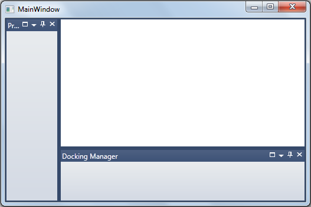
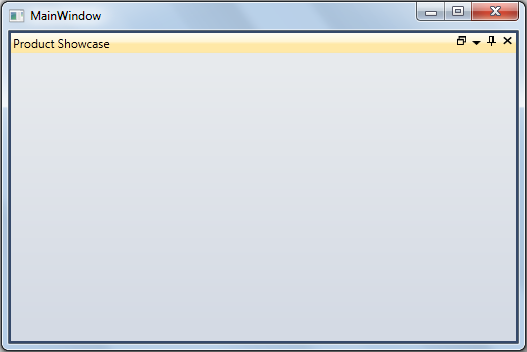

When the docked window is maximized the DockWindowState property will be set as Maximised. The maximized DockWindow can be restored by clicking on the restore button.
When the docked window is minimized it will go to AutoHidden state and the DockWindowState property will be set as Minimized. The minimized docked window can be restored by clicking on minimized item header.
|
[XAML] <syncfusion:DockingManager x:Name="dockingManager" MaximizeButtonEnabled="True" MinimizeButtonEnabled="True"> <!--Ribbon Window--> <ListBox Name="ListBox3" syncfusion:DockingManager.CanClose="False" syncfusion:DockingManager.CanFloat="False" syncfusion:DockingManager.DesiredWidthInDockedMode="200" syncfusion:DocumentContainer.MDIBounds="30,30,300,300" syncfusion:DockingManager.DesiredHeightInFloatingMode="200" syncfusion:DockingManager.Header="Ribbon" > <ListBoxItem Margin="2,2,2,2">Ribbon Sample</ListBoxItem> <ListBoxItem Margin="2,2,2,2">Ribbon DataBinding Demo</ListBoxItem> <ListBoxItem Margin="2,2,2,2">Ribbon State Persistance</ListBoxItem> <ListBoxItem Margin="2,2,2,2">ContextTabGroup Demo</ListBoxItem> <ListBoxItem Margin="2,2,2,2">BackStage Demo</ListBoxItem> </ListBox> </syncfusion:DockingManager > |
|
[C#] //enables the maximize and minimize feature
dockingManager.MaximizeButtonEnabled = true; dockingManager.MinimizeButtonEnabled = true; |
If the default value is true, then maximize support is enabled. If the property value is false the maximize button will not be visible. If the property value is true the button will be visible.
Support is available to add full-screen maximization for docked windows.
Using this feature, users can decide whether the docked windows should be maximized to full screen or normal size as per default behavior.
Properties
|
Property |
Description |
Type |
Data Type |
|
MaximizeMode |
Chooses the mode in which the docked window should be maximized. · If the MaximizeMode is set to FullScreen, it will maximize the docked window respective to Docking Manager size. · If the MaximizeMode is set to Default, it will maximize the docked window respective to its parent DockedElementsContainer size. |
Dependency |
MaximizeMode |
SystemDrive\Users\<user_name>\AppData\Local\Syncfusion\EssentialStudio\<Version_number>\ WPF\Tools.WPF\Samples\3.5\WindowsSamples\Docking Manager\Maximization Demo
The user can decide whether the docked windows should be maximized to full screen or normal size as per default behavior using the MaximizeMode property. To make the docked window maximize respective to the Docking Manager size, set this property to MaximizeMode.FullScreen. To make the docked window maximize respective to its parent DockedElementsContainer size, set this property to MaximizeMode.Default. By default the value of the MaximizeMode property is set to MaximizeMode.Default.
The following code snippet shows how to set values for the MaximizeMode property:
|
[XAML]
<syncfusion:DockingManager x:Name="dockingManager" MaximizeButtonEnabled="true" MaximizeMode="FullScreen" > <!-- Product Showcase Window --> <ListBox BorderThickness="0" Name="Parent1" syncfusion:DockingManager.DesiredHeightInDockedMode="100" syncfusion:DockingManager.Header="Product Showcase" > </ListBox> <!-- Docking Manager Window--> <ListBox BorderThickness="0" syncfusion:DockingManager.SideInDockedMode="Bottom" syncfusion:DockingManager.Header="Docking Manager" > </ListBox> </syncfusion:DockingManager >
|
|
[C#]
this.dockingManager.MaximizeMode = MaximizeMode.FullScreen; |

Figure 369: MaximizeMode = “FullScreen” (when MaximizedState is Normal)

Figure 370: MaximizeMode = “FullScreen” (when MaximizedState is Maximized)